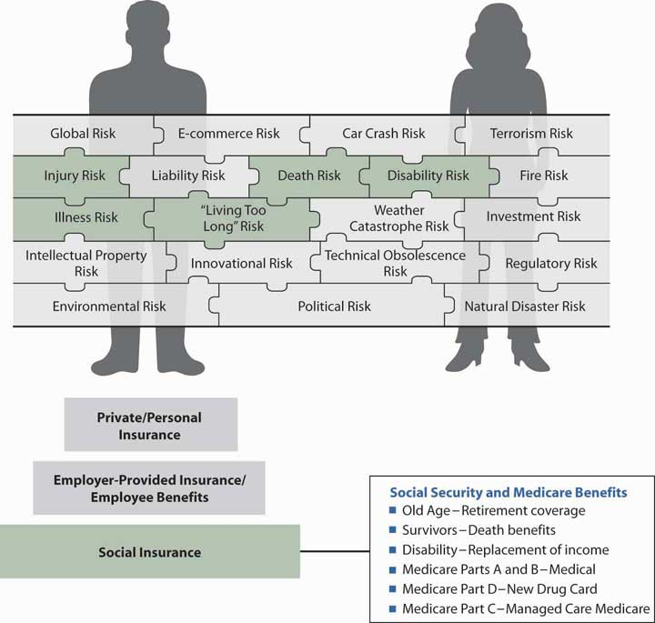

The mandatory coverage for life cycle events risk is Social Security. As noted in Chapter 16 "Risks Related to the Job: Workers’ Compensation and Unemployment Compensation", Social Security is a major social insurance program that was created in 1935 as an outcome of the Great Depression. Originally, this program was a compulsory pension plan known as Old Age Insurance (OAI). Later, survivors’ benefits were added and the program became known as Old Age and Survivors’ Insurance (OASI). When disability benefits were added, it became Old Age, Survivors’, and Disability Insurance (OASDI), and, with the addition of hospital and medical benefits, it became the Old Age, Survivors’, Disability, and Hospital Insurance (OASDHI) program. Social Security is not need-based and depends on a person’s employment history. Its objective is to provide a “floor of protection” or a “reasonable level of living.” Figure 18.1 "The Links between Life Cycle Risks and Social Security Benefits" illustrates the idea of a “floor of protection.” Social Security is the foundation on which retirement, survivors’, and disability benefits should be designed. In addition, the program is the foundation for health benefits for the retired population under Medicare Part A (hospitals), Part B (doctors), Part C (managed care medicine), and Part D (the new drug program). The discussion of Social Security is positioned here, in this chapter of the text, to emphasize the importance of Social Security as the foundation for employer-provided benefits, such as group life, disability, and health insurance and retirement programs.
Most U.S. workers—full-time, part-time, self-employed, and temporary employees—are part of the Social Security program. Every employer and employee is required to contribute in the form of payroll taxes. Social Security provides income in the event of retirement, disability, or death. It also provides medical expense benefits for disabled or retired persons and their specified dependents.All statistics in this chapter are from the Social Security Administration (http://www.ssa.gov) and the Department of Health and Human Service’s Medicare site (http://www.medicare.gov). The 2008 Social Security Trustees reported that income to the combined OASDI Trust Funds amounted to $785 billion in 2007. During that year, an estimated 163 million people had earnings covered by Social Security and paid payroll taxes, and the trust funds paid benefits of more than $585 billion to almost 50 million beneficiaries.OASDI Board of Trustees, “Status of the Social Security Program: A Summary of the 2008 Annual Social Security,” http://ssa.gov/OACT/TR/TR08/II_highlights.html#76455 (accessed April 4, 2009).
The Medicare program is the second largest social insurance program in the United States, with 44.1 million beneficiaries and total expenditures of $432 billion in 2007.Boards of Trustees, Federal Hospital Insurance and Federal Supplementary Medical Insurance Trust Funds, 2008, Annual Report, http://www.cms.hhs.gov/ReportsTrustFunds/ (accessed April 4, 2009).
This chapter includes the following discussion points:
Figure 18.1 The Links between Life Cycle Risks and Social Security Benefits
At this point in our study, we get into the foundation of different types of coverage for many of the life cycle, injury, and illness risks. In Chapter 19 "Mortality Risk Management: Individual Life Insurance and Group Life Insurance" to Chapter 20 "Employment-Based Risk Management (General)" we will talk about the risk management of all life cycle risks, but in this chapter, we will discuss a basic mandatory package of coverages that is tied to belonging to the work force in the United States. Social Security’s mandatory coverages comprise the first step in building the pyramid of coverages to ensure our complete holistic risk management process. Figure 18.1 "The Links between Life Cycle Risks and Social Security Benefits" depicts Social Security as the basic foundation of coverages for life cycle risks, which are part of our holistic risk picture.
As before, for our holistic risk management we need to look at all sources of coverage available. Understanding each component of the coverages from the various sources is critical to completing the picture and ensuring that we have adequately managed all our risks. Social insurance programs (including workers’ compensation and unemployment compensation discussed in Chapter 16 "Risks Related to the Job: Workers’ Compensation and Unemployment Compensation") play an important role in financial planning and should be considered when assessing the risk of economic loss due to premature death, disability, or retirement. The amount each individual must save for such situations is effectively reduced by the expected benefits from social insurance programs. The Social Security Administration (SSA) sends an annual statement to all workers that includes earnings history and projected future benefits. Table 18.1 "Estimated Average Monthly Benefits Payable as of December 2008" provides the estimated average income by beneficiary category as of December 2008.
Table 18.1 Estimated Average Monthly Benefits Payable as of December 2008
| Estimated Effect of a 5.8% COLA on Average Benefits | ||||
|---|---|---|---|---|
| Type of Benefit or Family | Before 5.8% COLA | After 5.8% COLA | Increase | |
| Benefit type | All retired workers | $1,090 | $1,153 | $63 |
| All disabled workers | 1,006 | 1,064 | 58 | |
| Family type | Aged couple | 1,773 | 1,876 | 103 |
| Surviving child(ren) onlyFamily with one or more children excludes surviving parent or guardian who is ineligible to receive benefits. | 936 | 991 | 55 | |
| Widowed mother and 2 children | 2,268 | 2,399 | 131 | |
| Aged widow(er) alone | 1,051 | 1,112 | 61 | |
| Disabled worker, spouse, and one or more children | 1,695 | 1,793 | 98 | |
| Note: The above estimates are based on actual benefit data through September 2008. | ||||
Source: Social Security Administration, October 16, 2008, Accessed April 5, 2009, http://www.ssa.gov/OACT/COLA/colaeffect.html.
In this section we elaborate on Social Security, one of the three social insurance programs in the United States:
Many governmental programs are designed to provide economic security for individuals and families. Both public assistance (also referred to as welfare programs) and social insurance programs are organized and undertaken by the government and have the broad social purpose of reducing want and destitution. However, social insurance is different from public assistance: social insuranceAn insurance program that is compulsory for nearly all Americans with eligibility criteria and benefits specified by law and financed wholly or partially through employment taxes. is an insurance program that is compulsory for nearly all Americans, eligibility criteria and benefits are specified by law, and financing is wholly or partially covered by the employer. Unlike public assistance, employers and employees pay into the social insurance system to earn their rights to benefits. Some examples of social insurance programs include workers’ compensation and unemployment compensation, which were covered in Chapter 16 "Risks Related to the Job: Workers’ Compensation and Unemployment Compensation", as well as Social Security.
Welfare benefits are financed through general revenues that come from both federal and state funds. Benefits received from welfare are not based on contributions made by or on behalf of the recipients. Medicaid is an example of a welfare benefit based solely on need. While public assistance programs have a role in providing economic security, they are not insurance programs. The insurance principles of assessing and pooling risk do not apply to welfare programs.
The types of benefits available from Social Security are apparent from the acronym OASDHIOld age (or retirement), survivors, disability, and health insurance (or Medicare) benefits, which include hospital insurance and supplemental medical insurance.: old age (or retirement), survivors’, disability, and health (or Medicare) benefits, which include hospital insurance and supplemental medical insurance. The program can be separated into two broad parts. The first part of OASDHI is the old-age, survivors’, and disability (OASD) insurance program known as Social SecuritySocial insurance program in the United States guaranteeing old age, survivors, disability (OASD) and health insurance (HI) benefits to eligible citizens who have contributed to the program.. The second part of the OASDHI program is Medicare (HI).
We will begin the discussion about Social Security and Medicare with a description of each social program, its benefits, and its eligibility requirements. Following the general discussion is an explanation of how the programs are financed. We will introduce the two programs separately because there are many differences between Social Security and Medicare. We begin with the eligibility requirements and then discuss the benefits available to eligible employees.
Today, nearly all employees in private industry, most self-employed persons, and members of the armed forces are covered by Social Security. Coverage is compulsory for more than 90 percent of all workers in the United States, meaning that Social Security taxes must be paid on their wages. The major exceptions are railroad workers, who are covered by the Railroad Retirement Act, and federal government employees, who were covered by other programs before 1984. Prior to 1984, state and local government bodies could elect not to cover certain employees under Social Security. With few exceptions, this option is no longer allowed. Municipal governments that elected out prior to 1984 do have the option to join the Social Security program voluntarily. Ministers are covered automatically unless they request a waiver on religious grounds. Members of religious sects whose beliefs prohibit acceptance of benefits are exempt.
To be eligible to receive benefits, a worker must achieve insured status. There are three levels of insured status: fully insured, currently insured, or disability insured. If the worker’s status is fully insured, most types of Social Security benefits are payable. If the worker does not have enough work tenure to be fully insured, he or she may be currently insured or disability insured, which still allows eligibility for some survivor benefits or disability benefits.
A person must be in the work force for a minimum number of quarters during which his or her earnings meet minimum criteria. The required earnings per quarter in 2008 was a minimum of $1,050, and in 2009 that amount increased to $1,090. The amount is adjusted every year. An employee can earn a maximum of four credits per year, even if he or she did not work the full four quarters, as long as he or she made enough even in one month (4 × $1,050). A Social Security beneficiary is fully insuredStatus achieved by a Social Security beneficiary once forty credits of coverage are earned, or when the beneficiary has a minimum of six credits of coverage and, if greater, at least as many quarters of coverage as there are years elapsing after 1950 (or after age twenty-one, if later) once forty credits of coverage are earned, or when the beneficiary has a minimum of six credits of coverage and, if greater, at least as many quarters of coverage as there are years elapsing after 1950 (or after age twenty-one, if later). For example, a person age twenty-five who has six credits of coverage is fully insured, whereas a person age forty needs nineteen credits to be fully insured. Currently insuredStatus achieved by a Social Security beneficiary having at least six credits in the thirteen-quarter period ending with the quarter of death. status is achieved if the Social Security beneficiary has at least six credits in the thirteen-quarter period ending with the quarter of death. Disability insuredStatus achieved by a Social Security beneficiary having twenty credits in the ten years before disability begins; less rigorous disability requirements apply to a beneficiary who is under age thirty-one or blind. status is gained by the Social Security beneficiary having twenty credits in the ten years before disability begins. Less rigorous disability requirements apply to a beneficiary who is under age thirty-one or blind.
As noted, Social Security pays four types of benefits: old-age (or retirement), survivors’, disability, and Medicare. Following is a more detailed description of each of these benefits.
A fully insured worker is eligible to receive benefits, including retirement income benefits. A spouse or divorced spouse of a retired worker is entitled to a monthly benefit if he or she is (1) at least age sixty-two, or (2) caring for at least one child of the retired worker (under age sixteen, or disabled if disability began before age twenty-two). A dependent child, grandchild, or great-grandchild of a retired worker who is (1) under age eighteen; (2) a full-time student between the ages of eighteen and nineteen; or (3) disabled, if disability began before age twenty-two, is also entitled to a benefit. Table 18.2 "Who Gets Monthly Benefits If a Fully Insured Worker Retires?" summarizes these benefits.
Table 18.2 Who Gets Monthly Benefits If a Fully Insured Worker Retires?
|
Normal retirement ageThe age at which full retirement benefits become available to retirees; age sixty-five in most private retirement plans. for the purposes of Social Security ranges from sixty-five (for people born before 1938) to sixty-seven (for those born in or after 1960). A fully insured worker is entitled to receive full retirement benefitsWhat fully insured beneficiaries of Social Security are entitled to receive at the normal retirement age (or reduced benefits as early as age sixty-two) at the normal retirement age for Social Security, or reduced benefits as early as age sixty-two. A schedule of the new retirement ages is shown in Table 18.3 "Schedule of Normal Social Security Retirement Ages".
Table 18.3 Schedule of Normal Social Security Retirement Ages
| Year of Birth | Age |
|---|---|
| 1937 and prior | 65 |
| 1938 | 65 and 2 months |
| 1939 | 65 and 4 months |
| 1940 | 65 and 6 months |
| 1941 | 65 and 8 months |
| 1942 | 65 and 10 months |
| 1943–1954 | 66 |
| 1955 | 66 and 2 months |
| 1956 | 66 and 4 months |
| 1957 | 66 and 6 months |
| 1958 | 66 and 8 months |
| 1959 | 66 and 10 months |
| 1960 and later | 67 |
| Notes: | |
| 1. Persons born on January 1 of any year should refer to the normal retirement age for the previous year. | |
| 2. For the purpose of determining benefit reductions for early retirement, widows and widowers whose entitlement is based on having attained age sixty should add two years to the year of birth shown in the table. | |
Sources: Processed by the authors from the American Academy of Actuaries CSO Task Force Report, June 2002, http://www.actuary.org/life/CSO_0702.asp (accessed April 4, 2009); 2001 CSO Ultimate Table.
Early retirement benefits are permanently reduced in amount because the expected benefit payout period is longer than it would have been starting from normal retirement age. In the case of early retirementIn the case of Social Security, can be taken as early as age sixty-two; results in reduction of benefit benefit by 5/9 of one percent for each month before the normal retirement age and a reduction of 5/12 percent beyond 36 months., a benefit is reduced 5/9 of 1 percent for each month before the normal retirement age for Social Security benefits. The earliest a person can retire, with benefits, is age sixty-two. Beyond thirty-six months, the benefit is reduced 5/12 of 1 percent per month.
For example, assume that the normal retirement age is exactly age sixty-seven and that a person decides to retire at exactly age sixty-two. There are a total of sixty months of reduction to the worker’s expected benefit. The reduction for the first thirty-six months is 5/9 of 1 percent times 36, or 20 percent. The reduction for the remaining twenty-four months is 5/12 of 1 percent times 24, or 10 percent. Thus, in this example, the total benefit reduction is 30 percent.
Likewise, postponing retirement past Social Security’s normal retirement age—late retirementIn the case of Social Security, results in a permanently increased benefit amount to compensate for the shortened length of the pay-out period and to encourage older workers to continue working full-time; has no effect for retirement beyond age sixty-nine—results in a permanently increased benefit amount to compensate for the shortened length of the payout period and to encourage older workers to continue working full-time. No delayed retirement credit is granted for retiring past age sixty-nine.
Social Security survivors’ benefitsFeature of Social Security that protects the surviving dependents of a fully or currently insured deceased worker; eligible recipients include dependent children, widows at least sixty years old, widows caring for dependent children under age sixteen or disabled children, disabled widows 50 years old and younger, and parents at least sixty-two years old considered dependents. protect the surviving dependents of a fully or currently insured deceased worker. The surviving spouse is entitled to monthly income payments if caring for a child who is under age sixteen or a child who is disabled by a disability that began before age twenty-two. A child of a fully or currently insured deceased worker is entitled to benefits if he or she (1) is under age eighteen, is disabled by a disability that began before age twenty-two, or is age eighteen or nineteen and a full-time student attending an elementary or secondary school; (2) was dependent on the deceased worker; and (3) is not married. Table 18.4 "Who Gets Monthly Benefits If a Fully Insured Worker Dies?" summarizes who gets monthly benefits if a fully insured or currently insured worker dies.
Table 18.4 Who Gets Monthly Benefits If a Fully Insured Worker Dies?
|
A widow or widower of a fully insured deceased worker is qualified for benefits at age fifty if disabled, and otherwise at age sixty. A divorced spouse also qualifies if he or she was married to the worker for at least ten years and has not remarried. A parent of a fully insured deceased worker is entitled to benefits if he or she (1) is at least age sixty-two, (2) was receiving at least half of his or her support from the child, (3) has not remarried since the child’s death, and (4) is not entitled to a retirement or disability benefit equal to or larger than this survivors’ benefit.
In addition to these monthly benefits, a small lump-sum death benefit of $255 is paid upon the death of a worker who is fully or currently insured. It is paid to the spouse living with the worker at the time of death, or a spouse otherwise entitled, or children entitled as described above. In the absence of a spouse or children, the death benefit is not paid. It is the only benefit that has not increased since the Social Security legislation was passed in 1935.
A fully insured worker who has a medically determinable physical or mental condition that prevents any substantial gainful work is entitled to monthly disability benefitsAvailable to a fully insured worker (and eligible dependents) in Social Security who has a medically determinable physical or mental condition preventing any gainful work after a waiting period of five full months if he or she is under age sixty-five and has been disabled for twelve months, is expected to be disabled for at least twelve months, or has a disability that is expected to result in death. after a waiting period of five full months if he or she is under age sixty-five and has been disabled for twelve months, is expected to be disabled for at least twelve months, or has a disability that is expected to result in death. A spouse or child of a disabled worker is entitled to a monthly benefit upon meeting the same qualifications as those previously listed in connection with retirement benefits. Table 18.5 "Who Gets Monthly Benefits If a Fully Insured Worker Is Disabled?" shows who gets monthly benefits if a fully insured worker is disabled. Note that, to receive benefits, the worker must be eligible by being fully insured or meeting the disability insured status. A nonblind person earning more than $980 in 2009 is considered to be engaging in substantial gainful activities and is not eligible for Social Security benefits. The amount of earnings allowable if the person is blind is $1,640 in 2009. These amounts are indexed annually to increases in the national wage index.Social Security Administration, “If You Are Blind or Have Low Vision—How We Can Help,” SSA Publication No. 05-10052, January 2009, ICN 462554, http://www.ssa.gov/pubs/10052.html (accessed April 4, 2009). It is extremely difficult to qualify to receive Social Security disability benefits.
Disability benefits may be stopped if the disabled worker refuses to participate in rehabilitation. They may be reduced if disability benefits are received from workers’ compensation or under a federal, state, or local law. As reported in the 2008 Trustees Report, “On December 31, 2007, about 850,000 persons were receiving monthly benefits from the OASI Trust Fund because of their disabilities or the disabilities of children. This total includes 25,000 mothers and fathers (wives or husbands under age sixty-five of retired-worker beneficiaries and widows or widowers of deceased insured workers) who met all other qualifying requirements and were receiving unreduced benefits solely because they had disabled-child beneficiaries (or disabled children aged sixteen or seventeen) in their care. Benefits paid from this trust fund to the persons described above totaled $7,293 million in calendar year 2007.”Social Security Administration, The 2008 OASDI Trustees Report, Section VI(G): Analysis of Benefit Disbursements from the OASI Trust Fund with Respect to Disabled Beneficiaries, June 11, 2008, Accessed April 4, 2009, http://ssa.gov/OACT/TR/TR08/VI_OASIforDI.html#97986.
Table 18.5 Who Gets Monthly Benefits If a Fully Insured Worker Is Disabled?
|
The primary insurance amount (PIA)The basic unit used to determine the amount of monthly Social Security benefits. is the basic unit used to determine the amount of monthly Social Security benefits. PIA is computed from a person’s average indexed monthly earnings. In the calculation of average indexed monthly earnings (AIME)Adjusts workers’ earnings from prior years (up to the maximum wage base) to what they would have been if wage levels in earlier years had been the same as they are now in computing a beneficiary’s primary insurance amount from Social Security., workers’ earnings for prior years, up to the maximum Social Security wage base (see Table 18.12 "OASDI Annual Wage Base for Tax Purposes" for the OASDI annual wage base), are adjusted to what they would have been if wage levels in earlier years had been the same as they are now. This is the indexed amount.
The Social Security Administration provides an illustration of retirement benefits using examples. Table 18.6 "Benefit Calculation Examples for Workers Retiring in 2009" shows the examples of two workers retiring in 2009—one at age sixty-two, the earliest age possible, and the other at age sixty-five, the normal retirement age. It is important to note the differences in the application of the PIA formula to the worker retiring at age sixty-two. If a worker retires at normal retirement age, the PIA benefits are calculated as if the person retired at age sixty-two and are modified with cost of living adjustments.
Table 18.6 Benefit Calculation Examples for Workers Retiring in 2009
| Earnings before and after indexing | ||||||
|---|---|---|---|---|---|---|
| Year | Case A, Born in 1947 | Case B, Born in 1943 | ||||
| Nominal Earnings | Indexing Factor | Indexed Earnings | Nominal Earnings | Indexing Factor | Indexed Earnings | |
| 1969 | $5,511 | 6.8556 | $37,781 | $4,803 | 5.7798 | $27,761 |
| 1970 | 5,802 | 6.5315 | 37,896 | 5,434 | 5.5066 | 29,923 |
| 1971 | 6,113 | 6.2190 | 38,017 | 6,023 | 5.2431 | 31,579 |
| 1972 | 6,733 | 5.6639 | 38,135 | 6,906 | 4.7751 | 32,977 |
| 1973 | 7,177 | 5.3304 | 38,256 | 7,612 | 4.4940 | 34,208 |
| 1974 | 7,627 | 5.0313 | 38,374 | 8,327 | 4.2418 | 35,322 |
| 1975 | 8,223 | 4.6815 | 38,496 | 9,208 | 3.9469 | 36,343 |
| 1976 | 8,817 | 4.3793 | 38,612 | 10,102 | 3.6921 | 37,297 |
| 1977 | 9,374 | 4.1317 | 38,730 | 10,964 | 3.4833 | 38,191 |
| 1978 | 10,150 | 3.8277 | 38,851 | 12,097 | 3.2271 | 39,038 |
| 1979 | 11,072 | 3.5198 | 38,971 | 13,426 | 2.9675 | 39,841 |
| 1980 | 12,106 | 3.2290 | 39,090 | 14,918 | 2.7223 | 40,611 |
| 1981 | 13,365 | 2.9337 | 39,208 | 16,718 | 2.4733 | 41,349 |
| 1982 | 14,144 | 2.7806 | 39,328 | 17,941 | 2.3442 | 42,058 |
| 1983 | 14,878 | 2.6514 | 39,448 | 19,121 | 2.2353 | 42,742 |
| 1984 | 15,800 | 2.5042 | 39,566 | 20,559 | 2.1112 | 43,405 |
| 1985 | 16,523 | 2.4019 | 39,686 | 21,752 | 2.0250 | 44,047 |
| 1986 | 17,064 | 2.3326 | 39,804 | 22,715 | 1.9666 | 44,671 |
| 1987 | 18,207 | 2.1928 | 39,924 | 24,491 | 1.8487 | 45,276 |
| 1988 | 19,161 | 2.0899 | 40,044 | 26,033 | 1.7619 | 45,868 |
| 1989 | 19,978 | 2.0103 | 40,161 | 27,403 | 1.6948 | 46,443 |
| 1990 | 20,963 | 1.9215 | 40,281 | 29,016 | 1.6200 | 47,005 |
| 1991 | 21,809 | 1.8525 | 40,401 | 30,449 | 1.5618 | 47,555 |
| 1992 | 23,000 | 1.7617 | 40,519 | 32,380 | 1.4853 | 48,093 |
| 1993 | 23,266 | 1.7467 | 40,638 | 33,016 | 1.4726 | 48,619 |
| 1994 | 23,961 | 1.7010 | 40,758 | 34,262 | 1.4341 | 49,135 |
| 1995 | 24,994 | 1.6355 | 40,877 | 36,003 | 1.3788 | 49,642 |
| 1996 | 26,293 | 1.5592 | 40,997 | 38,142 | 1.3145 | 50,139 |
| 1997 | 27,908 | 1.4733 | 41,116 | 40,761 | 1.2421 | 50,628 |
| 1998 | 29,453 | 1.4000 | 41,234 | 43,301 | 1.1803 | 51,108 |
| 1999 | 31,185 | 1.3261 | 41,354 | 46,136 | 1.1180 | 51,580 |
| 2000 | 33,004 | 1.2566 | 41,473 | 49,126 | 1.0594 | 52,044 |
| 2001 | 33,888 | 1.2273 | 41,591 | 50,740 | 1.0347 | 52,502 |
| 2002 | 34,326 | 1.2151 | 41,710 | 51,689 | 1.0244 | 52,953 |
| 2003 | 35,266 | 1.1861 | 41,830 | 53,396 | 1.0000 | 53,396 |
| 2004 | 37,011 | 1.1334 | 41,950 | 56,336 | 1.0000 | 56,336 |
| 2005 | 38,474 | 1.0934 | 42,069 | 58,866 | 1.0000 | 58,866 |
| 2006 | 40,356 | 1.0454 | 42,187 | 62,054 | 1.0000 | 62,054 |
| 2007 | 42,307 | 1.0000 | 42,307 | 65,369 | 1.0000 | 65,369 |
| 2008 | 44,051 | 1.0000 | 44,051 | 68,383 | 1.0000 | 68,383 |
| Highest—35 total | 1,415,637 | Highest—35 total | 1,677,907 | |||
| AIME | 3,370 | AIME | 3,995 | |||
Source: Social Security Administration, October 16, 2008, Accessed April 4, 2009, http://www.ssa.gov/OACT/ProgData/retirebenefit1.html.
We will use the examples provided by the Social Security Administration as a learning tool here. First, we focus on the calculation of the AIME. For each case, we see the columns labeled “nominal earnings.” Indexing brings nominal earnings up to near-current wage levels. For each case, the table shows columns of earnings before and after Indexing. The highest thirty-five years of indexed earnings and the corresponding average monthly amounts of such earnings are used for the benefit computation. The result is the AIME. The indexing requires some special computation. Consequently, there is no easy way to make an estimate of one’s PIA. It is not as simple as finding average wages and consulting a table. The Social Security Administration has computerized wage histories for all workers, and the PIA calculation is made when an application for benefits is processed. The Social Security Administration furnishes annually the calculation of each insured’s PIA. If a person has not received the statement, the Social Security Administration will furnish a record of the historical Social Security earnings and PIA upon request. The Social Security Administration Web site also has an online calculator.
After the AIME is determined, an individual’s PIA in 2009 would be determined by the formula in Table 18.7 "PIA Formula for an Individual in 2009". The formula shows that Social Security benefit levels, expressed as replacement ratiosExpression of Social Security benefit levels weighted in favor of lower-income workers; calculated as the benefit divided by the AIME., are weighted in favor of lower-income workers. Here, a replacement ratio is defined as the Social Security benefit divided by the AIME.
Table 18.7 PIA Formula for an Individual in 2009
|
For an individual who first becomes eligible for old-age insurance benefits or disability insurance benefits in 2009, or who dies in 2009 before becoming eligible for benefits, his or her PIA is the sum of
Round this amount to the next lower multiple of $0.10 if it is not already a multiple of $0.10. |
Source: Social Security Administration, October 16, 2008, Accessed April 4, 2009, http://www.ssa.gov/OACT/COLA/piaformula.html for 2009.
The three AIME ranges represented in the formula are known as bend points. The bend pointsThe AIME ranges in the Social Security benefit formula representing the dollar amounts at which the primary insurance amount calculation changes. represent the dollar amounts at which the primary insurance amount formula for Social Security benefits changes. The bend points increase as average wages in the economy increase. This is shown in Table 18.8 "Examples of PIA Calculations for the 2009 Retirement Cases Illustrated in ". The bend points in 2009 are $744 and $4,483, as you can see in Table 18.7 "PIA Formula for an Individual in 2009". These bend points apply to workers who become eligible for benefits (at age sixty-two) in 2009. A table of bend points for past years is available at http://www.ssa.gov.
Table 18.8 Examples of PIA Calculations for the 2009 Retirement Cases Illustrated in Table 18.5 "Who Gets Monthly Benefits If a Fully Insured Worker Is Disabled?" Case A—Retirement at Age Sixty-Two and Case B—Retirement at Age 65
| Formula Bend Points | ||||
|---|---|---|---|---|
| Case | AIME | First | Second | Formula Applied to AIME |
| A | $3,370 | $744 | $4,483 | .9(744) + .32(3370 − 744) = $1,509.92 |
| B | 3,995 | 627 | 3,779 | .9(627) + .32(3779 − 627) + .15(3995 − 3779) = $1,605.34 |
Source: Social Security Administration, October 16, 2008, Accessed April 5, 2009, http://www.ssa.gov/OACT/ProgData/retirebenefit2.html.
Table 18.8 "Examples of PIA Calculations for the 2009 Retirement Cases Illustrated in " illustrates the straightforward calculation for the worker in Case A who retires at age sixty-two. For the worker who retires in 2009 at age sixty-five, the bend points are the same as those in 2006 (as if he or she retired at age sixty-two). Thereafter, the benefits are adjusted to reflect the COLA of 3.3 percent, 2.3 percent, and 5.8 percent, respectively. The resulting PIA is $1,605.34.
As described above, the AIME determines the PIA of a retired or disabled worker; the benefit levels for other beneficiaries are a percentage of the PIA. If an individual qualifies as both a worker and as the spouse of a worker, the beneficiary will receive whichever PIA is greater, but not both. Other factors may also affect the benefit amount.
The maximum family benefit is the maximum monthly amount that can be paid on a worker’s earnings record. The formula for the maximum family benefit, shown in Table 18.9 "The PIA Formula for Maximum Family Benefit, 2009", is based on the worker’s primary insurance amount (PIA). The maximum PIA for the family is computed based on the bend points shown in Table 18.9 "The PIA Formula for Maximum Family Benefit, 2009". When the family reaches its maximum family benefit, the worker’s benefit is not reduced but the benefits of the survivors or dependents are reduced proportionately. There is also a minimum PIA for very-low-wage workers who have been covered by Social Security for at least ten years. This attempts to address the broad social purpose of Social Security: reducing want and destitution by providing an adequate income to insured workers.To be eligible for “special minimum” benefits, a worker must earn at least a certain portion (25 percent in years 1990 and before, and 15 percent in years following 1990) of the “old law” contribution and benefit base.
Table 18.9 The PIA Formula for Maximum Family Benefit, 2009
|
For the family of a worker who becomes age sixty-two or dies in 2009 before attaining age sixty-two, the total amount of benefits payable is computed so that it does not exceed
This total amount is then rounded to the next lower multiple of $0.10 if it is not already a multiple of $0.10. |
Source: Social Security Administration, October 16, 2008, Accessed April 5, 2009, http://www.ssa.gov/OACT/COLA/familymax.html.
Social Security benefit amounts are increased annually by automatic cost-of-living adjustments (COLAs)Increases Social Security benefit amounts annually in relation to increases in the consumer price index. linked to increases in the consumer price index (CPI). In addition, workers receiving Social Security disability income may have Social Security benefits reduced to offset other disability benefits received from governmental programs, such as workers’ compensation, to reduce the moral hazard of malingering. Legislation enacted in 1973 provides for automatic cost-of-living adjustments (COLAs). The theory is to prevent inflation from eroding the value of Social Security and Supplemental Security Income (SSI) benefits. The COLA for 2008 is 5.8 percent for both Social Security benefits and SSI payments, as you can see in Table 18.10 "Automatic Social Security Cost of Living Adjustments (COLAs)".
Table 18.10 Automatic Social Security Cost of Living Adjustments (COLAs)
| Social Security Cost-of-Living Adjustments | |||||
|---|---|---|---|---|---|
| Year | COLA | Year | COLA | Year | COLA |
| 1975 | 8.0% | 1990 | 5.4% | 2005 | 4.1% |
| 1976 | 6.4% | 1991 | 3.7% | 2006 | 3.3% |
| 1977 | 5.9% | 1992 | 3.0% | 2007 | 2.3% |
| 1978 | 6.5% | 1993 | 2.6% | 2008 | 5.8% |
| 1979 | 9.9% | 1994 | 2.8% | ||
| 1980 | 14.3% | 1995 | 2.6% | ||
| 1981 | 11.2% | 1996 | 2.9% | ||
| 1982 | 7.4% | 1997 | 2.1% | ||
| 1983 | 3.5% | 1998 | 1.3% | ||
| 1984 | 3.5% | 1999 | 2.5%The COLA for December 1999 was originally determined as 2.4 percent based on CPIs published by the Bureau of Labor Statistics. Pursuant to Public Law 106-554; however, this COLA is effectively now 2.5 percent. | ||
| 1985 | 3.1% | 2000 | 3.5% | ||
| 1986 | 1.3% | 2001 | 2.6% | ||
| 1987 | 4.2% | 2002 | 1.4% | ||
| 1988 | 4.0% | 2003 | 2.1% | ||
| 1989 | 4.7% | 2004 | 2.7% | ||
Source: Social Security Administration, October 16, 2008, Accessed April 5, 2009, http://www.ssa.gov/OACT/COLA/colaseries.html.
Many people retire before or after the normal retirement age, which affects the PIA for those individuals. For an individual retiring past the normal retirement age, the final benefit amount is higher than the PIA formula reveals, as illustrated in the example of Case B in Table 18.8 "Examples of PIA Calculations for the 2009 Retirement Cases Illustrated in ".
The Social Security retirement benefit may be reduced for a retiree who is younger than normal retirement age and whose annual earned income exceeds the retirement earnings exempt amount; this provision is called the earnings testReduces the Social Security benefit for a retiree who is younger than normal retirement age and whose annual earned income exceeds the retirement earnings exempt amount.. Its purpose is to limit monthly cash benefits for retirees who have earned income and to reduce the cost of the Social Security program. As Table 18.11 "Annual Retirement Earnings Test Exempt Amounts for Persons Under the Normal Retirement Age" shows, a beneficiary attaining the normal retirement age after 2002 is exempt from reduction of Social Security benefits regardless of the amount of earned income. The earning test applies only to early retirement.
Table 18.11 Annual Retirement Earnings Test Exempt Amounts for Persons Under the Normal Retirement Age
| Annual Retirement Earnings Test Exempt Amounts | ||
|---|---|---|
| Year | Lower Amount Applies in years before the year of attaining NRA. | Higher Amount Applies in the year of attaining NRA for months prior to such attainment. |
| 2000 | $10,080 | $17,000 |
| 2001 | 10,680 | 25,000 |
| 2002 | 11,280 | 30,000 |
| 2003 | 11,520 | 30,720 |
| 2004 | 11,640 | 31,080 |
| 2005 | 12,000 | 31,800 |
| 2006 | 12,480 | 33,240 |
| 2007 | 12,960 | 34,440 |
| 2008 | 13,560 | 36,120 |
| 2009 | 14,160 | 37,680 |
Source: Social Security Administration, October 16, 2008, Accessed April 5, 2009, http://www.ssa.gov/OACT/COLA/rtea.html
In 2008, a beneficiary under the normal retirement age would lose $1 of benefits for every $2 earned above $13,560. The beneficiary would also lose $1 for every $3 above the higher exempt amount, $36,120.
Social Security benefits are financed through payroll taxes paid by employers and employees and by a special tax on earnings paid by the self-employed. The tax rate for employers and employees is 6.2 percent for OASDI, up to a maximum amount of earnings called the wage base levelSpecifies the maximum amount of earnings on which Social Security taxation applies., as shown in Table 18.12 "OASDI Annual Wage Base for Tax Purposes", and 1.45 percent for HI (Medicare Part A) on all earnings. The tax rates scheduled under current law are shown in Table 18.13 "Tax Rates Paid on Wages and Earnings". Those who elect Medicare Part B coverage pay monthly premiums via deductions from their Social Security benefits checks.
Social Security taxes, sometimes called FICA taxes (after the Federal Insurance Contributions Act of 1939), are automatically withheld on wages up to a set amount and are adjusted annually for inflation. Any wages earned over this wage base are not taxed for Social Security, although Medicare Part A taxes are still deducted.
The tax rates are intended to remain constant (the last hike was in 1990), but the taxable wage base is adjusted annually to reflect increases in average wages. As you can see in Table 18.12 "OASDI Annual Wage Base for Tax Purposes", the 2008 annual wage base was $102,000, and it is $106,800 in 2009, meaning employers, employees, and the self-employed paid OASDI taxes on individual wages up to the wage base. If wages increase 5 percent the following year, the tax rates would remain the same but the taxable wage base would increase by 5 percent, thus increasing total Social Security tax revenue (all else being equal). Wages beyond the threshold are not subject to the OASDI tax, but they are subject to the Medicare Part A tax.
Social Security benefits are subject to income taxes. More specifically, taxes are payable on 50 percent of the Social Security benefit by single persons whose taxable incomes (including 50 percent of Social Security benefits and any interest on tax-exempt bonds) are between $25,000 and $34,000 (between $32,000 and $44,000 for married couples filing joint returns). If income exceeds $34,000 for single persons (or $44,000 for married couples filing jointly), up to 85 percent of the Social Security benefit received at retirement as income is taxable.
Table 18.12 OASDI Annual Wage Base for Tax Purposes
| Contribution and Benefit Bases, 1937–2009 | |||||
|---|---|---|---|---|---|
| Year(s) | Amount | Year(s) | Amount | Year(s) | Amount |
| 1937–1950 | $3,000 | 1981 | $29,700 | 1996 | $62,700 |
| 1951–1954 | 3,600 | 1982 | 32,400 | 1997 | 65,400 |
| 1955–1958 | 4,200 | 1983 | 35,700 | 1998 | 68,400 |
| 1959–1965 | 4,800 | 1984 | 37,800 | 1999 | 72,600 |
| 1966–1967 | 6,600 | 1985 | 39,600 | 2000 | 76,200 |
| 1968–1971 | 7,800 | 1986 | 42,000 | 2001 | 80,400 |
| 1972 | 9,000 | 1987 | 43,800 | 2002 | 84,900 |
| 1973 | 10,800 | 1988 | 45,000 | 2003 | 87,000 |
| 1974 | 13,200 | 1989 | 48,000 | 2004 | 87,900 |
| 1975 | 14,100 | 1990 | 51,300 | 2005 | 90,000 |
| 1976 | 15,300 | 1991 | 53,400 | 2006 | 94,200 |
| 1977 | 16,500 | 1992 | 55,500 | 2007 | 97,500 |
| 1978 | 17,700 | 1993 | 57,600 | 2008 | 102,000 |
| 1979 | 22,900 | 1994 | 60,600 | 2009 | 106,800 |
| 1980 | 25,900 | 1995 | 61,200 | ||
| Note: Amounts for 1937–1974 and for 1979–1981 were set by statute; all other amounts were determined under automatic adjustment provisions of the Social Security Act. | |||||
Source: Social Security Administration, January 15, 2009, Accessed April 5, 2009, http://www.ssa.gov/OACT/COLA/cbb.html.
Table 18.13 Tax Rates Paid on Wages and Earnings
| Calendar Years | Tax Rates as a Percentage of Taxable Earnings | |||||
|---|---|---|---|---|---|---|
| Tax Rate for Employees and Employers, Each | Tax Rate for Self-Employed Persons | |||||
| OASI | DI | Total | OASI | DI | Total | |
| 2000 and later | 5.300 | 0.900 | 6.200 | 10.6000 | 1.8000 | 12.400 |
| Calendar Years | Tax Rates as a Percentage of Taxable Earnings | |||||
| Rate for Employees and Employers, Each | Rate for Self-Employed Persons | |||||
| OASDI | Medicare A | Total | OASDI | Medicare A | Total | |
| 1990 and later | 6.200 | 1.450 | 7.650 | 12.400 | 2.900 | 15.300 |
The funds collected from payroll taxes are allocated among three trust funds. One trust fund is for retirement and survivors’ benefits; the second is for disability insurance; and the third is for hospital insurance, or Medicare Part A. Medicare Parts B and D, supplementary medical benefits, are financed by monthly premiums from persons enrolled in the program, along with amounts appropriated from the general revenue of the federal government. These funds are deposited in a fourth trust fund, the supplementary medical insurance trust fund.
The Social Security system is primarily a pay-as-you-go systemThe nature of Social Security, in which current tax revenues are used to pay the current benefits of recipients., meaning that current tax revenues are used to pay the current benefits of Social Security recipients. This is quite different from financing with traditional, private insurance, where funds are set aside in advance to accumulate over time and benefits are paid to those who contributed to the fund.
Income to the trust funds consists of the following:
The Social Security program is administered by the Social Security Administration, an agency of the United States Department of Health and Human Services. Local service is provided by offices located in the principal cities and towns of the fifty states and Puerto Rico. Applications for Social Security numbers and the various benefits as well as enrollment for the medical insurance plan (discussed next) are processed by the district office. The administration is set up to help beneficiaries in catastrophic times, as was evident following Hurricane Katrina. Because so many people were displaced, the Social Security Administration created emergency offices and stations to continue immediate payments to the evacuees.Social Security Administration, “Social Security Responds to Hurricane Katrina, Agency Issues More Than 30,000 Emergency Checks to Date,” Social Security Press Release, September 9, 2005, Accessed April 5, 2009, http://www.ssa.gov/pressoffice/pr/katrina-pr.html.
Disability determination—the decision whether or not an applicant for disability benefits is disabled as defined in the law—is made by a state agency (usually the vocational rehabilitation agency) under agreements between the state and the secretary of the Department of Health and Human Services. Qualification for hospital and medical benefits is determined by the district office, but claims for such benefits are processed through private insurer intermediaries under contract with the Social Security Administration.
The first decision concerning a person’s qualification for benefits under the various parts of the program is made at the local level. Simple, effective procedures exist for appeal by any applicant for whom the decision is unsatisfactory. There is no charge for such appeals, and the agency strives to provide courteous assistance to the claimant.
In this section you studied the features of Social Security, a compulsory social insurance program paying old age, survivors’, and disability (OASD) benefits:
The Baylor Crane Construction Company is a Virginia-based builder with 1,750 full-time and 300 part-time employees. The company provides all the social insurance programs required by law and most standard employee benefits plans. Last year, Baylor Crane suffered a high severity of losses when the top five floors of a high rise collapsed in Virginia Beach during strong winds. Luckily, most workers escaped injuries, except six workers who stayed to secure the building. Three of them sustained severe injuries and Johnny Kendle, the sixty-four-year-old supervisor, was killed. The injured workers are back at work except for Tom Leroy, who is still on disability. His prognosis is not good.
Dan Wolf, Duncan Smith, and Jim Lavell are employees of the Happy Wood Company. Fifteen months ago, Dan Wolf was injured when a log fell on him and hurt his back. He has not been able to work since. Duncan Smith, who had fifteen years of service with the company, was killed in that accident. He left a wife and five children. About a month later, Jim Lavell injured his back at home and he, too, has been unable to work since the accident.
In this section we elaborate on the portion of the Social Security program known as Medicare:
Anyone who is eligible for Social Security or railroad retirement benefits at age sixty-five is also eligible for Medicare Part A—hospital insurance benefits. No premium is required because workers have already paid Medicare A taxes. A worker does not have to retire to be covered for hospital benefits; however, Medicare is the secondary payer for persons who continue to work between ages sixty-five and sixty-nine and have medical coverage through their employers. Individuals age sixty-five and over who are not eligible for Social Security or railroad retirement benefits may enroll in Medicare Part A by paying premiums. The Medicare Part ABenefit of Social Security that provides hospital-related benefits of: inpatient hospital services, posthospital home health services, and hospice care. plan provides the following hospital-related benefits:
For Medicare Part A, the deductible paid by the beneficiary was $1,068 in 2009, up $44 from the deductible of $1,024 in 2008.
Anyone eligible for Part A, the basic hospital benefits plan, and anyone age sixty-five or over is eligible for Medicare Part B—medical benefits, Medicare Part C—managed care benefits, and Medicare Part D—drug benefits. Those receiving Social Security or railroad retirement benefits are enrolled automatically unless they elect not to be covered. The monthly premium paid by beneficiaries enrolled in Medicare Part BBenefit of Social Security that provides physician services, outpatient services, certain home health services, durable medical equipment, and other items., which covers physician services, out-patient hospital services, certain home health services, durable medical equipment, and other items, is $96.40 in 2009, the same as in 2008.
Charges that are not covered through Medicare parts A and B include routine physical examinations; routine care of the eyes, ears, and feet; prescription drugs; most immunizations; and cosmetic surgery. Coverage for such options may be available through Medicare Part C, discussed below. Doctors must bill Medicare directly, rather than having patients file Medicare claims. Some physicians and surgeons accept as full payment the amount that Medicare considers reasonable, but others charge patients an additional fee. However, doctors are limited in the additional amount they may charge patients.
Medicare Part CAllows eligible participants to receive the benefits of Medicare Parts A and B through private health plans, in addition to certain items not covered by Medicare Parts A and B., also known as Medicare+Choice, was authorized by the Balanced Budget Act of 1997. Through Medicare Part C, eligible participants can elect to receive the benefits of Medicare Parts A and B through private health plans, in addition to certain items not covered by Medicare Parts A and B. These supplemental benefits might include dental care, vision care, and health club memberships. Medicare Part C may also cover routine physical examinations, unlike Parts A and B, thereby encouraging preventive care. Medicare+Choice became known as Medicare Advantage plans with the addition of prescription drug coverage through the Medicare Prescription Drug, Improvement, and Modernization Act of 2003. Medicare Part C enrollees are limited to a network of benefit providers, a feature similar to managed care health plans (discussed in Chapter 22 "Employment and Individual Health Risk Management"). Going outside the network causes some expenses to be passed on to participants.
Medicare Advantage plans are offered to eligible persons through managed care, preferred provider organization (PPO), private fee-for-service, and specialty arrangements. You will learn about all of these concepts in Chapter 22 "Employment and Individual Health Risk Management". Membership cards are issued to Medicare Part C participants by plan providers. Because the range of covered services varies among Medicare Advantage providers, premiums for Medicare Part C benefits are not fixed by the Social Security Administration. Participants typically pay an amount equal to Medicare Part B premiums plus an additional charge for the added benefits of Medicare Part C. Medicare Advantage providers who choose to cover less for certain benefits than would be paid by Medicare Parts A and B typically lower out-of-pocket costs for plan participants so that they do not pay more for proportionately less coverage. Providers are compensated by the government. Additionally, benefit formulas that overpay providers of Medicare Advantage plans relative to traditional Medicare benefits result in a net extra benefit value for participants.
Medicare Part DBenefit of Social Security created through the Medicare Prescription Drug, Improvement and Modernization Act of 2003 that provides assistance for costs relating to prescription medications. is the Medicare Prescription Drug, Improvement, and Modernization Act of 2003 (P.L. 108–173), enacted December 8, 2003. It requires the Social Security Administration to undertake a number of additional Medicare-related responsibilities. Under Medicare Part D, the Social Security Administration and the Centers for Medicare & Medicaid Services (CMS) work together to provide persons with limited income and resources with extra help paying for their prescription drugs. The start date of this program was January 1, 2006. Insurance companies and other private companies work with Medicare to provide a choice of plans that cover both brand-name and generic drugs. To enroll, a beneficiary must have Medicare Part A and/or Medicare Part B. The combination of Part C Medicare Advantage plans with Part D prescription drug benefits are known as Medicare Advantage Prescription Drug (MAPD) plans.
Medicare D premiums are not set in stone. For example, the Center for Medicare and Medicaid Services released the following in September 2005: “The average Part D monthly premium will be $32, about 14 percent lower than had been projected, with plans in virtually all areas of the country available for a premium of under $20 or even less. The drug benefit will provide help with prescription drug costs that for many beneficiaries will exceed the premium cost.”“Medicare Premiums and Deductibles for 2006,” CMS Office of Public Affairs, September 16, 2005, http://www.cms.hhs.gov/apps/media/press/release.asp?Counter=1557, Accessed April 5, 2009.
Table 18.14 "How Does Medicare Part D—the “Drug Card”—Work?" details how the drug card works. For those with limited income and resources, there is a way to qualify for extra help that will cover between 85 and almost 100 percent of drug costs. Most people who are eligible for this extra help pay no premiums, no deductibles, and no more than $5 for each prescription. The amount of extra help depends on income and resources. In the beginning of 2006, the help promised was not in place, so the states helped those in need.
Table 18.14 How Does Medicare Part D—the “Drug Card”—Work?
Here is an example: |
||||
| $250 Deductible | $250–$2,250 | $2,251 Until You Reach $3,600 in Out-of-Pocket Cost | After $3,600 in Out-of-Pocket Costs | |
| What you pay | $250 | 25% up to $500 | $2,850* | 5% |
| What your plan pays | $0 | 75% up to $1,500 | $0 | 95% |
| Total drug spending | $250 | $2,250 | $5,100 | |
| *$250 deductible + $500 (25% of $250 to $2,250) + $2,850 = $3,600 out of pocket cost. | ||||
|---|---|---|---|---|
The benefits provided under all Medicare parts are listed in Table 18.15 "All Medicare Parts (A to D)".
Table 18.15 All Medicare Parts (A to D)
|
Medicare has four parts:
|
Source: Social Security Administration, SSA Publication No. 05-10024, January 2009, ICN 454930, Accessed April 5, 2009, http://www.ssa.gov/pubs/10024.html#aboutbenefits.
In this section you studied the features of Medicare, a compulsory social insurance program paying hospital insurance (HI) benefits:
Medicare costs have turned out to be much greater than expected when the program was first enacted. The number of people eligible for Medicare and the benefit amounts have increased through the years. For example, Medicare covers not only medical expenses for eligible retirees but also kidney dialysis and kidney transplants for persons of all ages.
In this section we elaborate on the following:
During the 2000 presidential election campaign, Social Security financing was the most heated issue, with the debate focusing on privatization and moving away from the pay-as-you-go system. When the stock market was booming and everyone believed they could do better by investing their own funds, the idea of moving away from the current system became very appealing; however, their tune changed after the large decline in the stock market. The immediate big issue in early 2006 was how to help those who could not pay the deductibles and coinsurance for the new drug program. The major funding problems are still at issue.
Social Security and Medicare were originally designed to operate with advance funding, but for many years they have operated on an unfunded, pay-as-you-go basis. As a result, this generation of workers is paying for the benefits of current beneficiaries. Social Security taxes have increased much faster than the general level of prices and even faster than the cost of health care during the past two decades.
As described in the box “Does Privatization Provide a More Equitable Solution?” and depicted in Figure 18.2 "Number of Workers per OASDI Beneficiary", the number of retired workers has increased faster than the number of those working. In 1945, there were forty-two workers per retiree. Currently, this has decreased to approximately three workers per retiree and is expected to decline to two by 2020. The Social Security funding burden is being borne by a shrinking sector of society because birth rates have declined and longevity has increased. This trend will continue as the baby boomers move out of the work force and into retirement. Retired workers are concerned about the certainty of their benefits and future required tax rates. The current generation of taxpayers has serious doubts about the ability of the Social Security system to deliver benefits at current inflation-adjusted levels.
Such doubts are understandable, considering recent problems of the OASI program, which is by far the largest part of the system. Each year, the trustees of the Social Security and Medicare trust funds report on the funds’ status and their projected condition over the next seventy-five years. The 2008 Annual Reports continue to show that both Social Security and Medicare need serious reform.Social Security and Medicare Board of Trustees’ Summary of the 2008 Annual Reports on the status of the Social Security and Medicare Programs. The goal of the public trustees is to approach the current state of Social Security and Medicare in a nonpartisan way. They aim to ensure the integrity of the reports, both in methods of preparation and in the credibility of the information they contain. Realizing that numerous assumptions must be made to predict the future condition of the funds, the trustees prepare these reports because they believe the reports paint the most reliable picture available today. This summary is available online at http://www.ssa.gov/OACT/TRSUM/trsummary.html. Both programs face a long-term financing gap. Closing the gap between monies going into the Social Security and Medicare funds and monies coming out of the funds will be a challenge. It will force the government to come up with innovative solutions to fixing the long-term deficits.
As Figure 18.3 "Long-Range OASI and DI Annual Income Rates and Cost Rates (as a Percentage of Taxable Payroll), Trustees Report 2008" shows, the OASDI and HI trust funds are expected to be adequately financed for only the next ten years (depending on the actuarial assumptions).2005 OASDI Trustees Report, Section II: Overview, http://www.ssa.gov/OACT/TR/TR02/II_highlights.html#76460. Figure 18.4 "OASDI and HI Income Shortfall to Pay Scheduled Benefits, and the 75 Percent General Fund Revenue Contribution to SMI (Percentage of GDP), Trustees Report 2008" shows the deficits of the Medicare Parts B and D trust funds. The deficits are expected to grow rapidly.
Figure 18.2 Number of Workers per OASDI Beneficiary

Source: OASDI Trustees Report, http://www.ssa.gov/OACT/COLA/CBB.html.
Figure 18.3 Long-Range OASI and DI Annual Income Rates and Cost Rates (as a Percentage of Taxable Payroll), Trustees Report 2008

Source: Social Security and Medicare Board of Trustees, “A Summary of the 2008 Annual Reports,” April 22, 2008, http://www.ssa.gov/OACT/TRSUM/trsummary.html (accessed April 5, 2009).
Figure 18.4 OASDI and HI Income Shortfall to Pay Scheduled Benefits, and the 75 Percent General Fund Revenue Contribution to SMI (Percentage of GDP), Trustees Report 2008

Source: Social Security and Medicare Board of Trustees, “A Summary of the 2008 Annual Reports,” April 22, 2008, http://www.ssa.gov/OACT/TRSUM/trsummary.html (accessed April 5, 2009).
Whether the objective of the Social Security program should be to provide a “floor of protection” or a “reasonable level of living” remains debatable. Reform will require agreement, however, by politicians and the public on not only what benefits citizens are entitled to, but what benefits taxpayers are willing to fund. See the box “The Future of Social Security,” for a discussion of this topic.
In many countries, financing the government social security system has become increasingly difficult for several reasons. Benefit levels have increased in many nations, to the point where the tax rates necessary to support benefits are at an all-time high. For example, free or very-low-cost medical care may be available to everyone, disability benefits may require little proof of inability to work, and generous disability payments may result in the moral hazard of malingering. Demographic trends in other industrialized nations mirror those in the United States: the population is aging, so fewer workers finance the pay-as-you-go system for retirees. The declining birth rate suggests that this trend is unlikely to be reversed. In addition, other governments also face the problem of growing budget deficits. Governments in some developing countries may be perceived as unable to administer the social security system fairly and efficiently.
Experts anticipate a shift from public sector social insurance plans to private sector plans, especially for retirement benefits. Private sector organizations, particularly insurance companies, have successfully managed retirement savings and income for decades and are in a position to improve management and funding practices. Several countries have already begun to privatize the social security system, namely, Chile, Peru, Mexico, Italy, and Japan. In Chile (beginning in 1981) and Peru (in 1993), for example, workers are required to contribute to their own retirement fund, and contributions are invested by a private pension fund manager selected by the worker. In both these countries, the prefunded privatized system appears to be working well. Some countries also are moving toward privatized medical care systems.
The trend toward privatization is worldwide, including both industrialized and developing countries. The potential for market expansion for insurers and other financial institutions is tremendous.
The threat to the stability of Social Security has been apparent for decades. For years, political leaders have agreed that something must be done…. We can postpone action no longer. Social Security is a challenge now; if we fail to act, it will become a crisis. We must save Social Security and we now have the opportunity to do so.
With these words, on May 2, 2001, President George W. Bush established the Presidential Commission to Strengthen Social Security.
The crisis President Bush was referring to is the declining numbers of new workers paying into the Social Security system. Fewer births and longer life expectancies are causes. In 1940, when the first benefits were paid, there were more than forty workers paying for each retiree receiving benefits. In 1960, there were five workers for each retiree. Today, there are 3.4 workers paying for each beneficiary. With the baby boom generation set to retire over the next few decades, that number is expected to fall even further. The Presidential Commission’s report estimates that the ratio will be 2.2:1 in 2025 and just 2:1 by 2050.
These demographic changes mean that the burden of paying for Social Security will fall ever more heavily on the younger generation of workers. When polled, 41 percent of young people (ages eighteen to thirty-four) said that they do not expect to receive Social Security benefits at today’s level when they retire, while 31 percent expected to receive no benefits at all.
Certainly, current benefit levels cannot be maintained without raising Social Security withholding taxes or extending the normal retirement age. But is it fair to tax younger workers more heavily to pay for their parents’ retirement? Will there even be any money left for their own retirement? One solution that has been proposed is individual investment accounts that would allow individuals to invest a percentage of their Social Security savings themselves. Proponents of privatization argue that it would allow greater returns than the traditional Social Security system.
In the heady days of soaring stock prices and budget surpluses, just before President Bush created the commission, privatization was a popular solution. Workers, it was argued, could invest their Social Security funds in the stock market and see great returns. Low-wage workers would become shareholders in the U.S. economy and be able to accumulate wealth. Money would flow into the economy.
With the economic recession that began in 2008, privatization has lost momentum. But even when the plan was first proposed, it faced opposition on a number of grounds. The pay-as-you-go system is a guaranteed benefit. With many retirees depending on Social Security as their main source of income, this guarantee is crucial. But what happens if an individual invested unwisely? Proponents of a private system argue that an education campaign, along with requirements for diversification and safeguards against high-risk investments, should prevent such losses.
Another argument against privatization is the distortion it could cause in the stock market. With a large number of funds flowing into mutual funds from Social Security investors, prices might be driven up artificially. Government-approved mutual funds would receive a huge windfall in fees.
Most young people, who politicians have argued would benefit the most from privatization, do not support changing the Social Security system but would rather see the existing system strengthened. A majority polled say that “making sure that people receive a decent, guaranteed monthly retirement benefit” is a higher priority than “making sure that people receive a better rate of return.”
Questions for Discussion
Sources: Key findings from Hart Research Poll, July 24, 1998; “Young Americans and Social Security: A Public Opinion Study Conducted for the 2030 Center by Peter D. Hart, Research Associates,” July 1999, accessed April 5, 2009, http://www.commondreams.org/pressreleases/july99/072299a.htm; President’s Commission to Strengthen Social Security, “Final Report: Strengthening Social Security and Creating Personal Wealth for All Americans,” December 21, 2001 (this document includes all appendixes and Estimates of Financial Effects for Three Models Developed by the President’s Commission to Strengthen Social Security, prepared by the Office of the Chief Actuary, Social Security Administration, May 2, 2001); Gary Burtless, “Social Security Privatization and Financial Market Risk,” Center on Social and Economic Dynamics, Working Paper No. 10, February 2000; Social Security Administration, “Little Change in Social Security Solvency (Trustees Recommend Timely Action),” March 23, 2005, accessed April 5, 2009, http://www.ssa.gov/pressoffice/pr/trustee05-pr.htm.
A quick glance at Figure 18.3 "Long-Range OASI and DI Annual Income Rates and Cost Rates (as a Percentage of Taxable Payroll), Trustees Report 2008" shows that the costs of Social Security are rising faster than the payments into the system. In the 2008 Annual Report to Congress, the Trustees announced the following:
Figure 18.3 "Long-Range OASI and DI Annual Income Rates and Cost Rates (as a Percentage of Taxable Payroll), Trustees Report 2008" and Figure 18.4 "OASDI and HI Income Shortfall to Pay Scheduled Benefits, and the 75 Percent General Fund Revenue Contribution to SMI (Percentage of GDP), Trustees Report 2008" are from the 2008 OASDI Trustees Report on the current and projected financial condition of all the Social Security programs. (The six trustees of the board are the Secretary of the Treasury, the Secretary of Labor, the Secretary of Health and Human Services, the Commissioner of Social Security, and two members appointed by the president.) The programs are financed through four separate trust funds: the Old-Age and Survivors Insurance (OASI) Trust Fund, Disability Insurance (DI), and two for Medicare.
To project future effects on the bottom line, the trustees review available evidence and gather expert opinion about all the factors that affect income and expenditures: demographic (birth rate, mortality, immigration); economic (unemployment rates, inflation); and program-specific (retirement patterns, disability incidence). The trustees make both short-range (ten-year) and long-range (seventy-five-year) predictions.
Traditional solutions to the looming Social Security and Medicare budget crisis have focused on increasing these taxes and cutting benefits. President G. W. Bush, in his State of the Union address on January 31, 2006, called for a bipartisan committee to find a solution to the impending major shortfall as the baby boom generation begins retirement. President Bush and many members of Congress believed the answer was privatization—allowing workers to invest some or all of their own (private) Social Security funds in the stock market, which historically yields greater returns over long investment periods than Treasury securities do. Beliefs in an ownership society and personal responsibility lie behind this objective. After Chile’s successful move to privatization in 1981, almost every South American country has followed suit, with positive results. Countries from Singapore to Hungary have also converted successfully. With the economic recession of 2008 and the arrival of a new administration, focus has shifted from Social Security as a major political issue. But there are many arguments on both sides, and it remains to be seen how the Social Security system will be preserved.
Sources: Merrill Matthews, Jr., “A 12-Step Plan for Social Security Reform,” National Center for Policy Analysis, June 4, 1998, http://www.ncpa.org/ba/ba267.html (accessed April 4, 2009); Social Security Administration, the 2008 OASDI Trustees Report, June 11, 2008, http://ssa.gov/OACT/TR/TR08/trTOC.html (accessed April 4, 2009).
In this section you studied problems with the Social Security program in the United States and examples of global trends in administering social insurance:
C. J. Abbott worked hard all his life and built up a successful business. His daily routine involves helping with management decisions in the business, even though the majority of it is now owned and managed by his sons. He continues to draw a salary from the company sufficient to cover his expenses each month. C. J. is fully insured under Social Security and applied for benefits at age sixty-two. However, he does not presently receive, nor has he ever received, Social Security benefits. He celebrated his sixty-fourth birthday last May.
When your father-in-law retired, he applied for Social Security retirement benefits. Several months later, he was notified that he was not entitled to benefits because the work he did for you was in the family and not bona fide employment. The implication in the notice he received was that the job you gave him was designed to qualify him for Social Security benefits rather than to provide him with real employment.